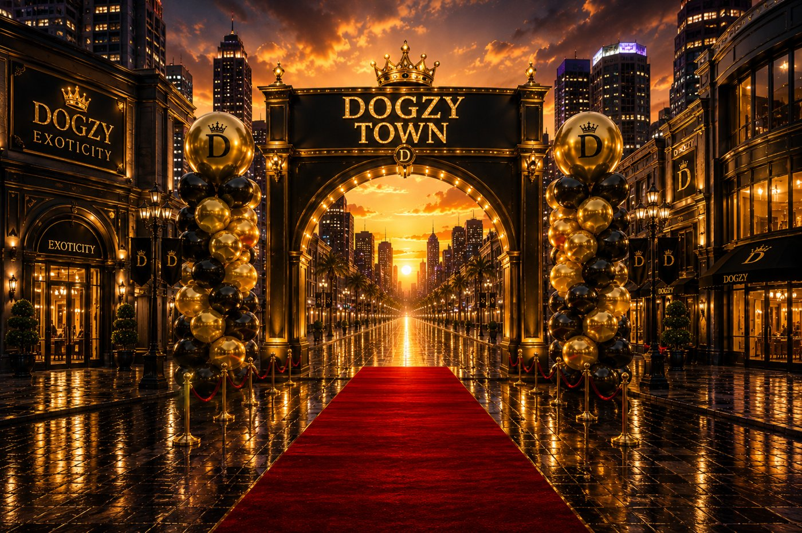
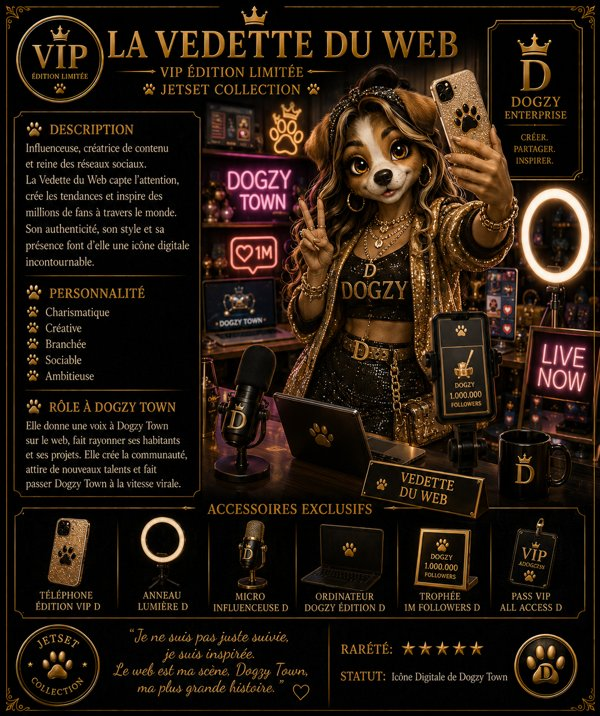
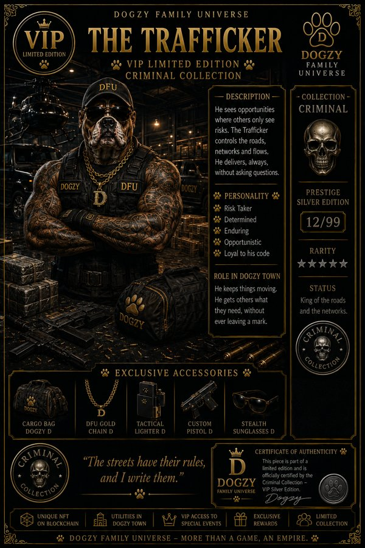
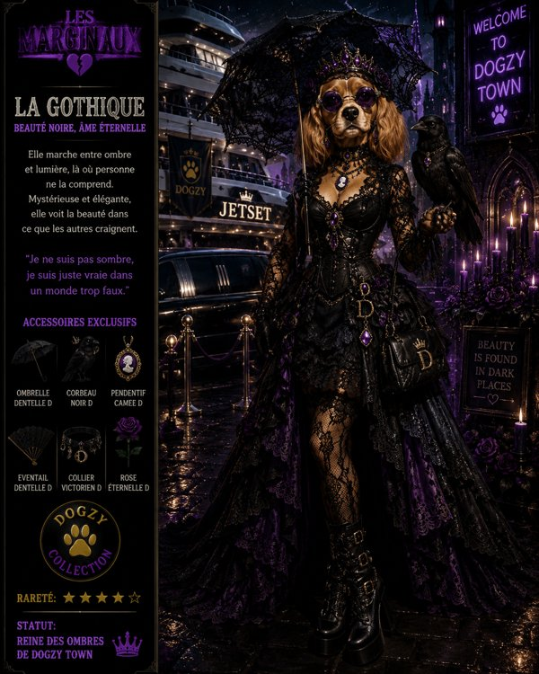
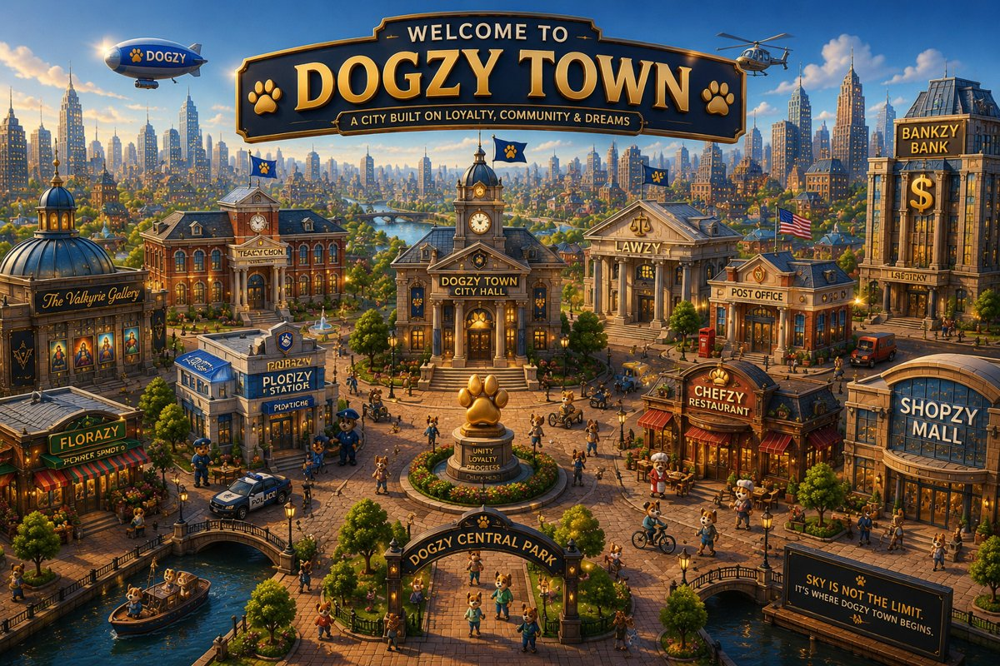

Dogzie Town est le jeu vidéo pour console. Ce dossier présente ce volet seul, avec ses propres onglets. Il peut être montré sans aucun autre document.
Rien ici n'est inventé : les fiches, missions et personnages pas encore créés sont marqués « à venir ».

Dans l'ordre : jet-set, criminels, vedettes, extravertis, marginaux, geeks, mondes d'adrénaline, justiciers, adolescents. Trois collections ont déjà une page d'aperçu sur le site local. Les six autres sont des noms seulement : leurs fiches sont à venir et aucun personnage n'est inventé ici.



Onglet réservé aux missions du jeu console.
Aucune mission n'est encore écrite dans ce dossier. Les missions seront ajoutées par Valkyrie ; rien n'est inventé ici.
Premier des deux clans de Dogzie Town.
Les collections et personnages qui en font partie restent à confirmer par Valkyrie. Aucun nom de personnage n'est ajouté.
Second clan de Dogzie Town.
Les collections et personnages qui en font partie restent à confirmer par Valkyrie. Aucun nom de personnage n'est ajouté.
Les trois onglets sont prêts à recevoir le contenu. La répartition des neuf collections entre les deux clans n'est pas décidée dans ce document.
Une présentation côté PlayStation existe déjà en fichier local : Dogzie-Town-Sony-pitch.pdf (16 pages, en anglais). Ce matériel appartient à ce dossier Dogzie Town.
Ce dossier ne dit pas que Sony a accepté, refusé, ou qu'il est partenaire. Aucune réponse n'est mentionnée.

Le principe : les jetons gagnés dans les missions du jeu console pourront être exportés vers un portefeuille, quand le joueur le choisit.
Ce n'est pas encore détaillé. Aucun mécanisme, aucun taux et aucune adresse ne sont donnés ici. Rien n'est déployé.
Le pitch pour les investisseurs propre à Dogzie Town, le jeu console. Il appartient à ce dossier.
Ce n'est pas un partenariat avec Sony, et ce n'est pas le deck Dogzy Family Universe. Aucun chiffre n'est repris ici.
L'autre univers, Dogzy Family Universe (volet 2), a son propre dossier.
Valkyrie